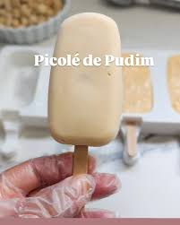

Ingredientes

1 pudim médio pronto
200ml leite
açúcar para o caramelo
calda de caramelo fria para o recheio
chocolate branco derretido para cobertura
Modo de preparo:
Bata o pudim com o leite no liquidificador
até obter uma mistura lisa. Coloque a mistura
em formas de picolé e leve ao freezer. Depois de
duas horas, faça furos no centro do picolé e
recheie com calda de caramelo fria, coloque os
palitos e retorne para o freezer. Deseforme depois de congelado.
Sirva frio.